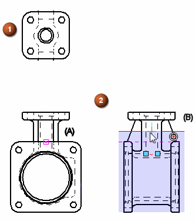

Modify the drawing view display depth
You can redefine the display depth on a drawing view, so that more or less geometry is visible.
-
Right-click a drawing view where a display depth was applied (1) , and choose Set Drawing View Depth.
Refer to the image below.
-
The current clipping plane location is displayed on the view where it was defined (2). If it was defined associatively, the connect relationship indicator also is shown (2A).
Click a different keypoint (such as a center point, end point, or midpoint) or a centerline. (2B)

You can redefine the depth in any view that is orthogonal to the original view where the plane is applied.
-
Update the original drawing view to see the new display depth.
To see a connection point associated with a depth plane line, choose the Sketching tab→Relate group→Relationship Handles command.